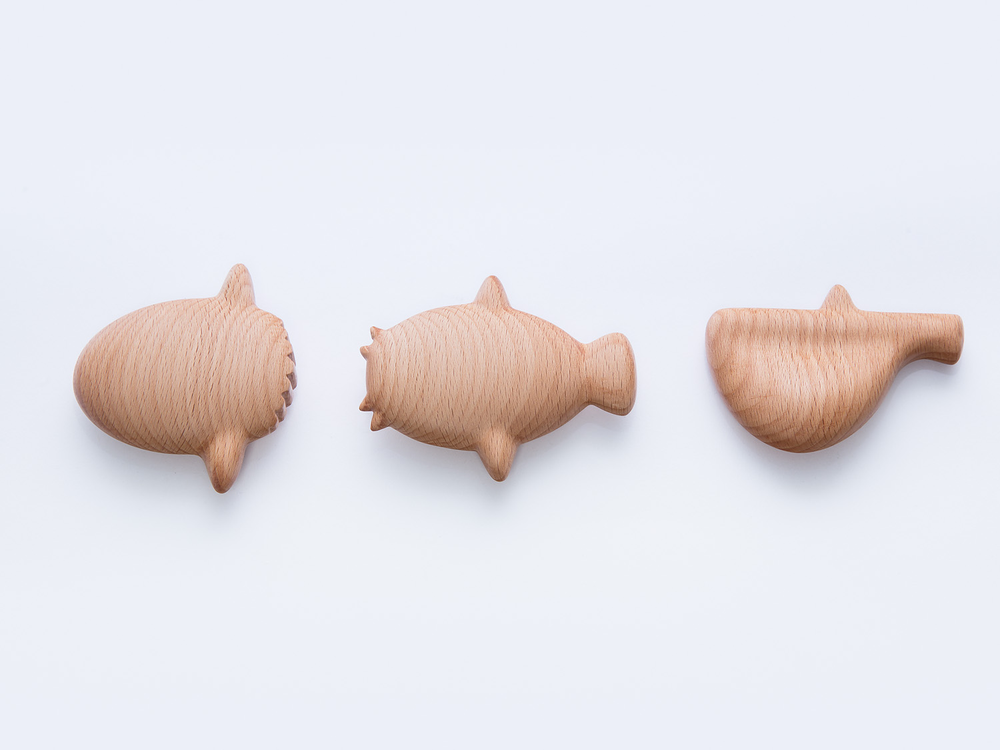

The Fish Gua Sha is a portable self-massage instrument that has several smooth-edges which can be used in short or long strokes on the skin to relieve muscle pain, promote relaxation, and energize the senses.
The Fish Gua Sha are milled from Beech wood and take their forms from the Sunfish, the Hatchetfish, and the Catfish.
The Gua Sha is a healing technique of traditional East Asian medicine that is often used in ancient healing art of acupressure. Gua Sha is used to treat as well as prevent the common cold, flu, asthma, and pain, both acute and chronic. These acupressure points are specific sites on the body that often treat pain or discomfort elsewhere.
Designed for Papersource & Kikkerland
Materials: Beech wood
Dimensions: 3.25 x 3.0", 3.0 x 3.75", 2.75 x 3.75"